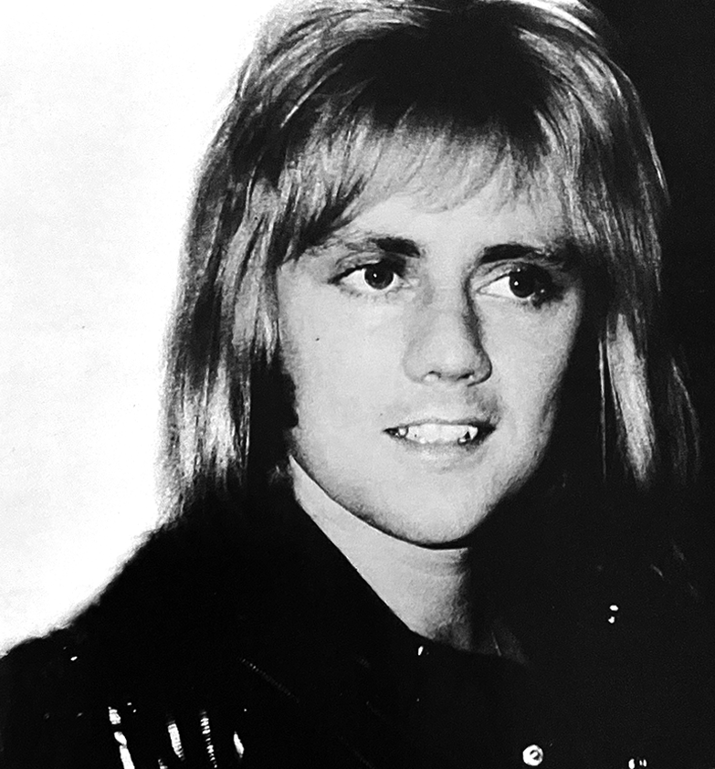
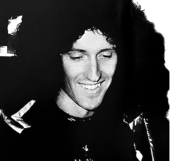
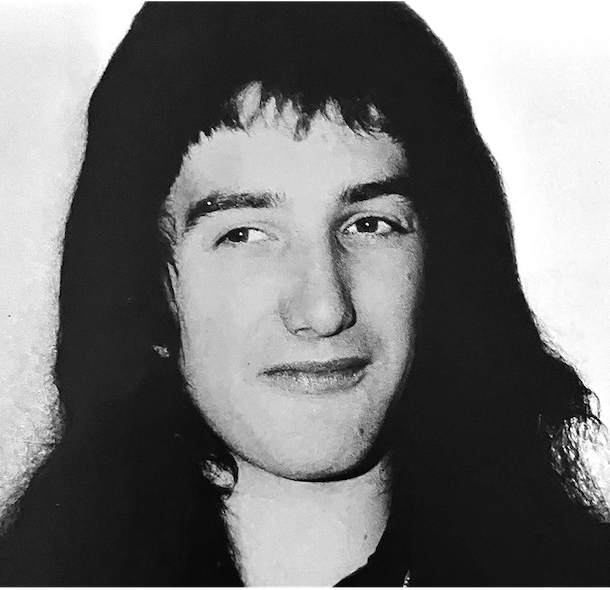

The first impression I had about Queen upon their second visit to Japan was that they had become global stars. Compared to last year, they had grown as people (especially the other three, excluding Freddie), and they had become more aware and relaxed as top musicians. In other words, they had scaled up.
When they arrived in Japan on March 20th, they were met with a thunderous welcome from their fans at the airport, just like last year. Their bodyguards were strong but not a match for the power of the fans. Amid screams and shouting, they fled to their hotel.

Queen is a group that really values their fans. In contrast with groups like Led Zeppelin or Deep Purple, who hate being followed around by fans, Queen likes to dialogue with them, even though it must be quite a hassle. So many fans flocked to the hotel where they were staying that the lobby was overflowing with them, which created quite a challenging situation. But the band always seemed to care about them. There were so many gifts for the band that their hotel rooms were piled high with them. Roger and Brian received the most, followed by Freddie and John. Brian was the happiest of them all, and would beam at the contents of even the smallest packages.
And rock music poured from their rooms the whole time! They listened to Jimi Hendrix, Zeppelin, and The Who, turning up the volume on the cassette tape player they'd bought here in Japan, letting themselves go to the rock rhythm. Roger is a fan of hard rock and when I gave him Zeppelin's new tape, Presence, in Sendai, he exclaimed "Thank you!! Great!!" over and over again. He immediately returned to his room, turned up the volume, and listened intently. He seemed to be the rocker amongst the band members, and his song I'm in Love with My Car is a truly excellent rock'n'roll number.

Would Queen have achieved such success without Freddie? Watching them, I strongly felt that Freddie was the leader, not only because of his musical creativity and the content of his lyrics, but also because the stage structure and ideas almost all came from him. And no other vocalist can move as elegantly as Freddie can—not even Robert Plant of Zeppelin could pull off what he does. It felt like the other three members were truly supporting him and making the show even better.

One interesting thing to note this time around is that Brian seemed to be featuring himself more. His movements were clear, and unlike last year, he seemed to be playing with a greater sense of freedom. His technique is highly acclaimed worldwide. However, perhaps because he's a bit shy and awkward, his stage presence lacked flow. If he could show off some cool action like Jimmy Page, Queen might be admired by a different set of fans than they are now.
Regardless, Queen has grown into a global power group, but their future lies with their fans. On this tour, there were some fans who caused a lot of trouble for us, and we must make sure that these fans don't make trouble for the good fans who truly love Queen. If we don't, the time will never come for Queen to be truly appreciated, and they'll never be able to grow.